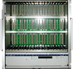
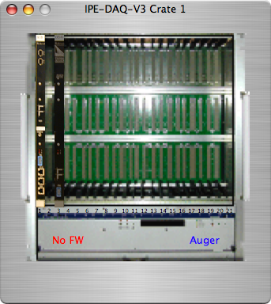

The IPE-DAQ Electronics is a FPGA based multi-channel, high rate data aquisition system build at the Institute of Data Processing and Electronics at Forschungszentrum Karlsruhe. It has been used in the Auger and Katrin experiments.
The IPE-DAQ crate icon looks like this in the configuration: 

Here's a view of the IPE-DAQ crate dialog. The crate has be equiped with at least one SLT card in the first slots and up to 20 FLT cards in the remaining slots. Double-clicking a card will open up that card's dialog. Cards can be dragged from slot to slot. Selected cards can be deleted with Ctrl-X or the delete key.
The crate will not allow multiple cards to occupy the same slot.
The crate is connected to the host computer via Firewire. A missing Firewire connection is indicated in the lower part of the crate dialog by the text "No FW".